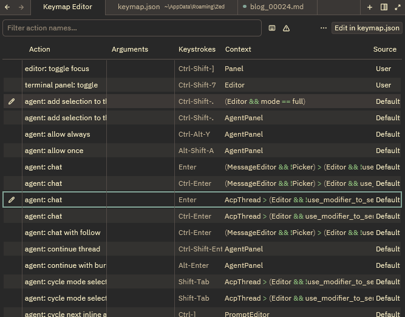

Zed IDE keymap.jsonのすすめ
Zedのkeymap.jsonの筆者の最低限のおすすめ設定を共有します
こんにちは！パン君です。
今回はZedエディタで設定しておくと便利な keymap.json について筆者のおすすめ設定を記述します。
また前回の記事で IDEの設定ファイル settings.json についてのおすすめ設定も記述しておりますので、
そちらも読んでみるといいかもしれません！ breadmotion.github.ioZed IDE setting.jsonのすすめ | PanKUN BlogZedのsetting.jsonの筆者の最低限のおすすめ設定を共有します
breadmotion.github.ioZed IDE setting.jsonのすすめ | PanKUN BlogZedのsetting.jsonの筆者の最低限のおすすめ設定を共有します
はじめに
Zedにはカスタマイズが可能なキーバインドシステムがあり簡単に設定が可能です。
また下記のようなIDEでは settins.json から設定を行うことができ、 Zed でもこれが可能ではありますが、
Zedは keymap.json で基本は設定するようになっています。 (settings.jsonに書いても動作したはず)
- VSCode
- Atom
- Emacs
- JetBrains
- Sublime Text
- TextMate
- Cursor
また公式ドキュメントを参考にする場合は下記をみれば確実にわかります。
zed.devKeybindings | Key Bindings and Shortcuts - ZedCustomize Zed's keyboard shortcuts. Rebind actions, create key sequences, and set context-specific bindings.
設定方法
設定方法は keymap.jsonに直書きか、 [ctrl-shift-p] でコマンドパレットにて zed: open keymap を入力 & 選択 で設定が可能です。
後者は GUIベースで設定が可能なのでかなり楽に設定が可能です
| keymap.json | keymap editor | |
|---|---|---|
| 特徴 | 細かいところまで手が届くかも？ | 構文を知らなくても設定が可能 |
| おすすめな人 | キーボードから手を離さずに調整したい人とか、特殊な挙動を作成したい人にはおすすめ | 構文がわからなかったり、簡単に設定したい人はおすすめ |

基本構文
基本的に下記の構文で記載していきます。
単一のキー押下だけでなく、複数のキーを順番に入力するシーケンスも判定するように作られているので"bindings" マップ内の各キーは スペース(構文的には - で扱う必要がある) で複数キーの入力だと記述することで実現が可能です。
[
{
"bindings": {
"ctrl-'": "command",
"shift-ctrl-'": "command"
}
},
{
"context": "context",
"bindings": {
"fn-n": "command"
}
}
]
他構文について細かく知りたい場合は下記公式ドキュメントの Keybinding Syntax の項の閲覧を推奨します。
zed.devKeybindings | Key Bindings and Shortcuts - ZedCustomize Zed's keyboard shortcuts. Rebind actions, create key sequences, and set context-specific bindings.
本題のおすすめ設定
コンテキスト や 優先順位、リマップなど他にも色々細かくあるのですが、
本題の設定のすすめ がメインなので設定ファイルのおすすめを記述していきます。
※筆者は英字配列でかつテンキーが無いキーボードデバイスを利用しています。
...
と言いたいところですが、実はほとんどはデフォルトのままにしておいた方がいいというのが結論になります。
理由は後述するとして、下記だけ keymap.json に追加しておけば他は特に触る必要がないです。
[
{
"context": "Editor",
"bindings": {
"ctrl-shift-'": "terminal_panel::Toggle" // デフォルトは "ctrl-`"
}
},
{
"context": "Panel",
"bindings": {
"ctrl-shift-]": "editor::ToggleFocus"
}
}
]理由について２点
上記は自分にとって Zed IDE を使う際に最も必要だった操作にも関わらず デフォルトキー操作には存在しなかった臭かったので設定しました。
これを追加することによって下記の操作がキー操作のみで可能になります。
- エージェントパネルにいつでもフォーカスができ、AIとチャットベースのやり取りを中断する事なくプロンプトを投げることが可能
- ターミナルパネルにいつでもフォーカスできる
- デフォルトのキーバインド [ctrl-b] によって左のパネルの表示、非表示を切り替えることが出来るので、
エージェントパネルとターミナルパネルをデフォルトの右ドッキングにしている人はそれらのパネルにフォーカスされている時にこの切り替えを二回行うとファイル編集画面にフォーカスをいつでも戻すことが可能です。
基本はコマンドパレット(ctrl-shift-p)で設定されているものは、従来皆さんが慣れ親しんでいるIDEやグローバルなキーバインドが設定されているます。
かつ「～風」のキーバインドの設定をデフォルトにしてください！ 的な設定項目もあるので、変に変更を加えたり、その人の感覚にあったキーバインドをおすすめしても意味がないです。
なので、必要になったら下記の手順を取って各々追加、リマップしてください。
- 「ここキー操作単体で簡潔させたいな」 という不満を抱く
- 該当操作が存在するか コマンドパレットで検索 もしくは 公式なりで調べる
- 該当するコマンドを自分が操作したいキーバインドで設定する
3に関しては前述した設定方法のどちらのアプローチでも大丈夫です。
まとめ
パネル間の移動だけ完備してしまえば、後はデフォルトのショートカットを眺めた後に自分のキーマップにリマップしてしまえば
なんでも思うように作業ができるようになるはずです。
それでは快適なZedライフを！